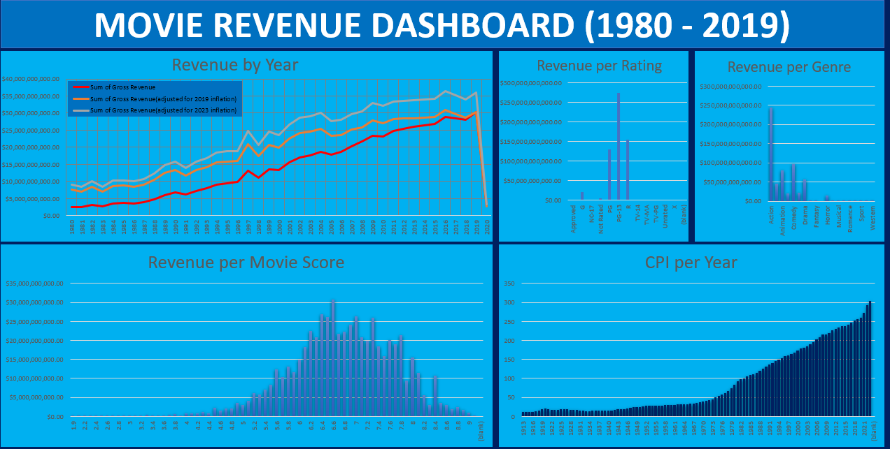
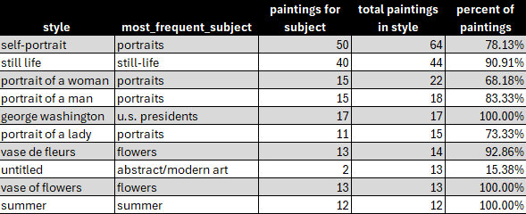
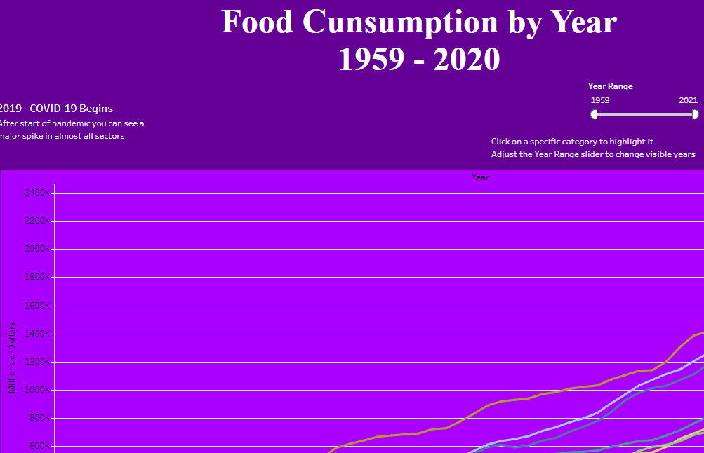

In this project, I meticulously analyzed movie revenue data spanning
from 1980 to 2020 using Microsoft Excel. Through a comprehensive Excel dashboard,
I explored trends in annual revenue, examined the correlation between revenue
and movie ratings, genres, and scores. The result is an interactive and
visually engaging showcase of my proficiency in data analysis,
providing a snapshot of the dynamic landscape of the film industry over the years.


In this project, I harnessed the power of PGAdmin and SQL to conduct a targeted data analysis.
With a focus on locating and sorting specific data points, I navigated through the database,
crafting intricate SQL queries to extract meaningful insights. The outcome is a meticulous sorting of data,
offering a clear narrative of patterns and trends, demonstrating my proficiency in database management
and SQL-driven analysis. Explore the detailed project documentation for an in-depth look into how I transformed
raw data into valuable insights using PGAdmin and SQL.

In this project, I utilized Tableau to dissect food consumption trends over multiple years, placing a
specific focus on the notable spike during the COVID-19 pandemic. Through interactive and insightful Tableau dashboards,
I transformed raw data into a visual narrative, providing a comprehensive view of annual consumption changes.